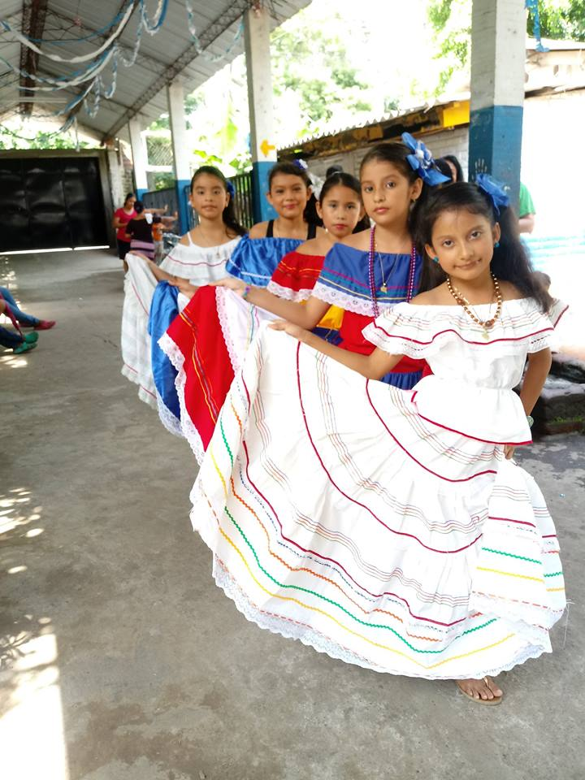
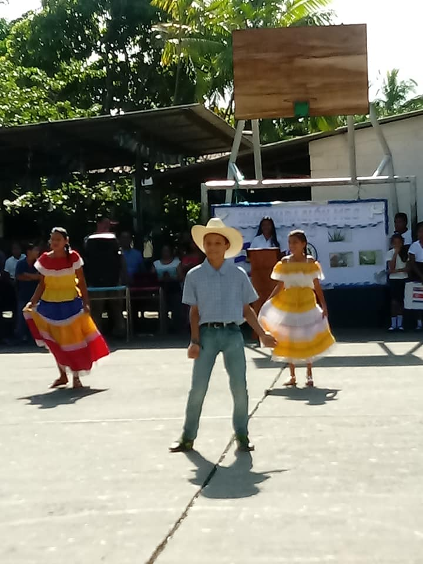
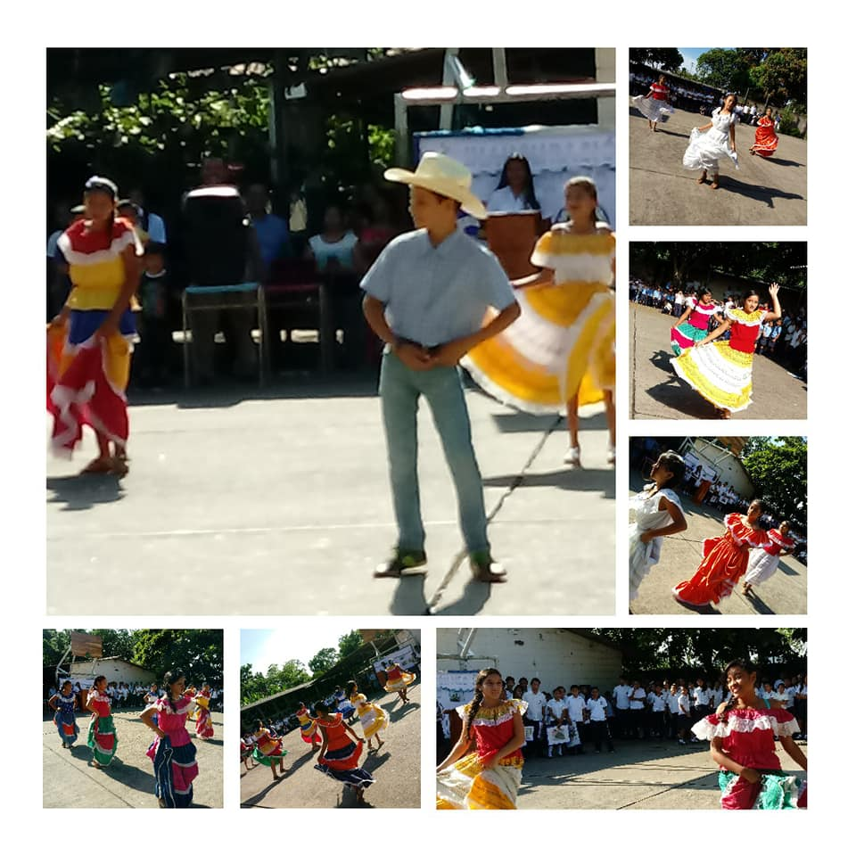

Artistica

El arte es entender como cualquier actividad o producto realizado con una finalidad estética y comunicativa, mediante la cula se expresan ideas, emociones o una visión del mundo a través del lenguaje, la musica la danza y la pintura

La presencia del arte en el Complejo Educativo Jorge Larde contribuye al desarrollo integral y pleno en los niños y jovenes. Esto se caracteriza por enriquecer y realizar un gran aporte cognitivo en el desarrollonden las habilidades y destrezas de los estudiantes, como el emprendimiento, la diversidad cultura, la innovación la creatividad o la curiosidad
